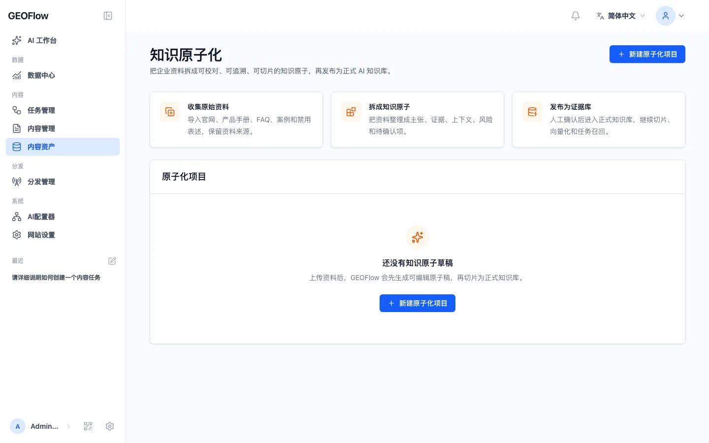
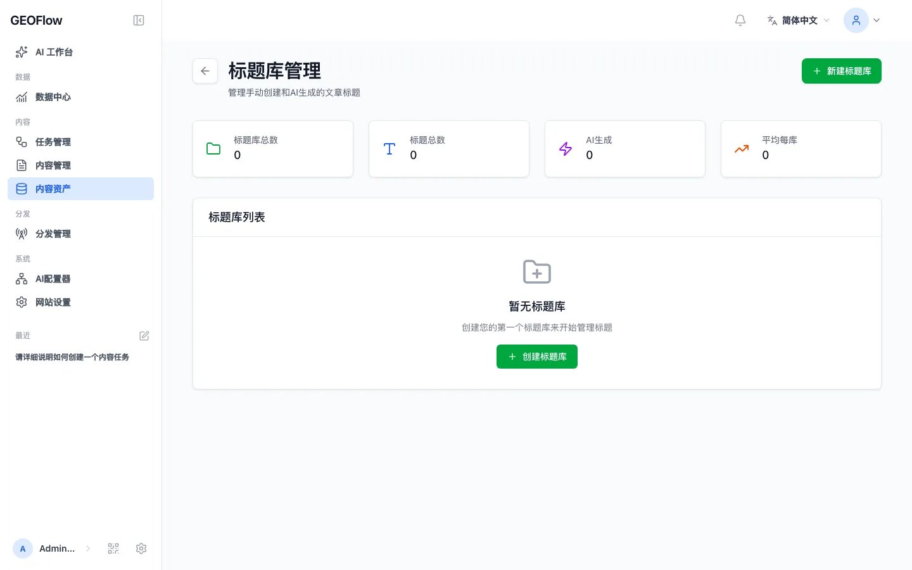
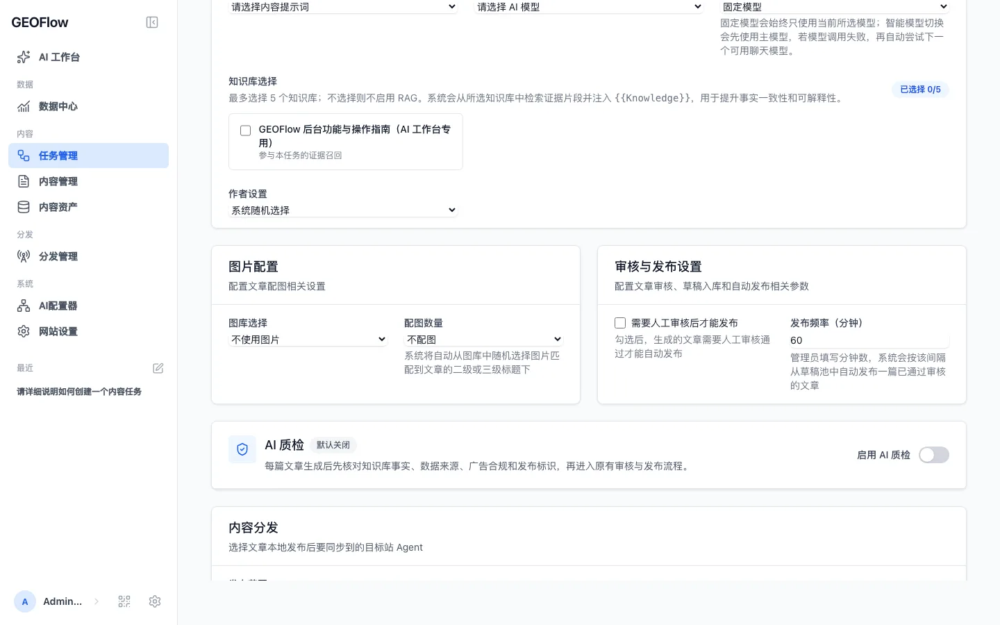
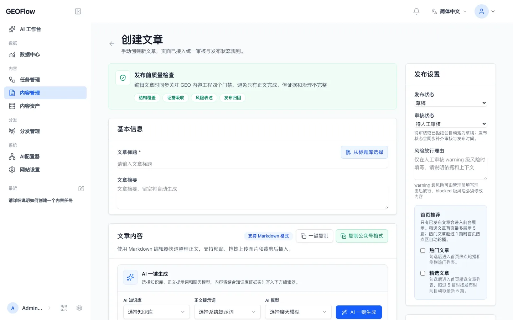
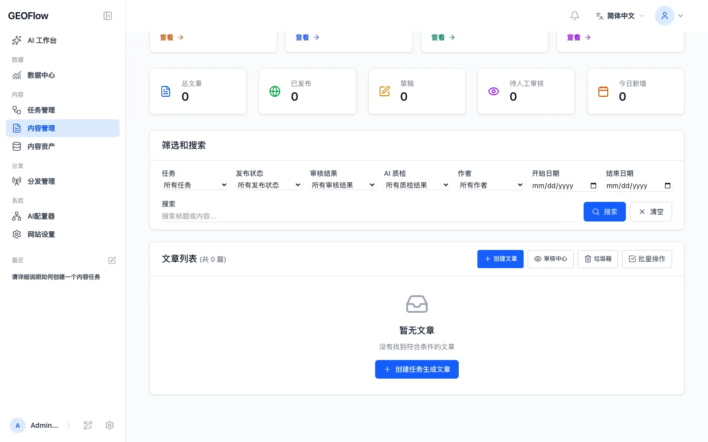
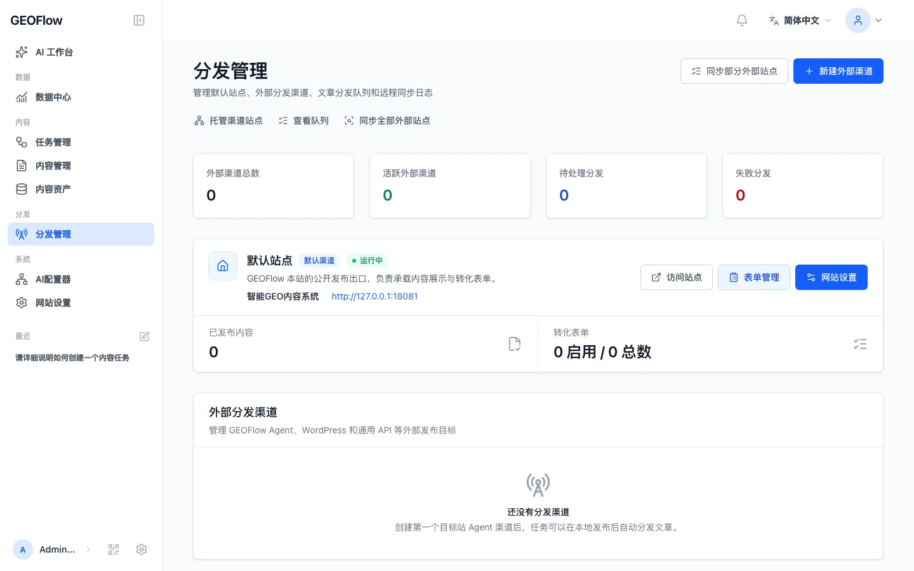
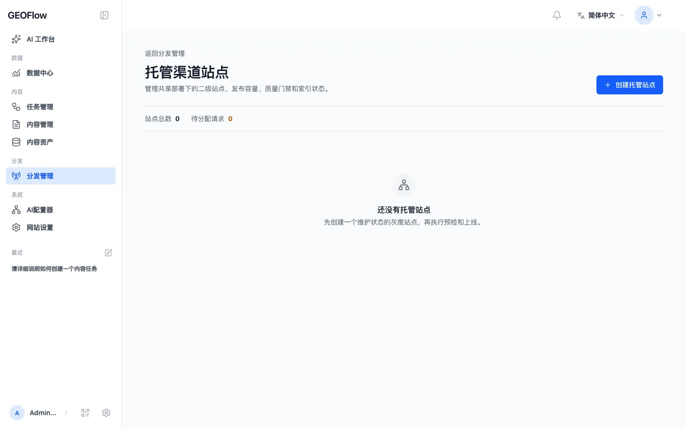
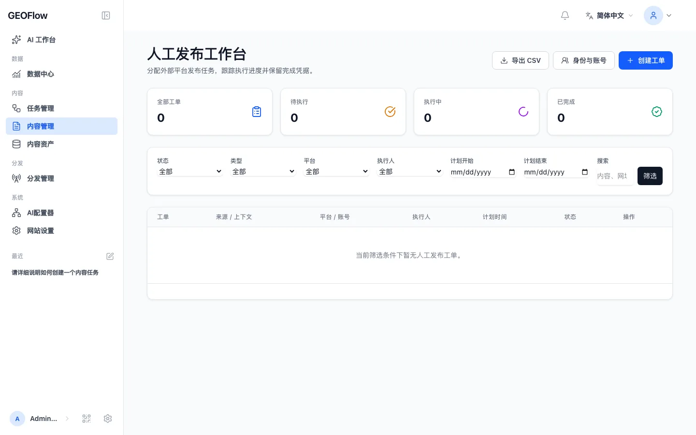
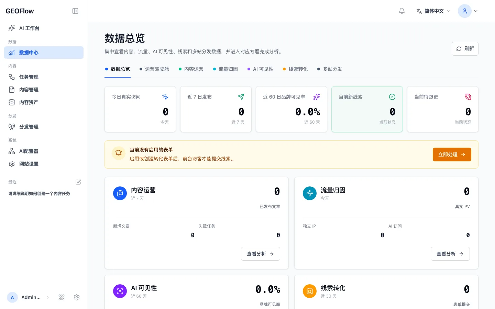
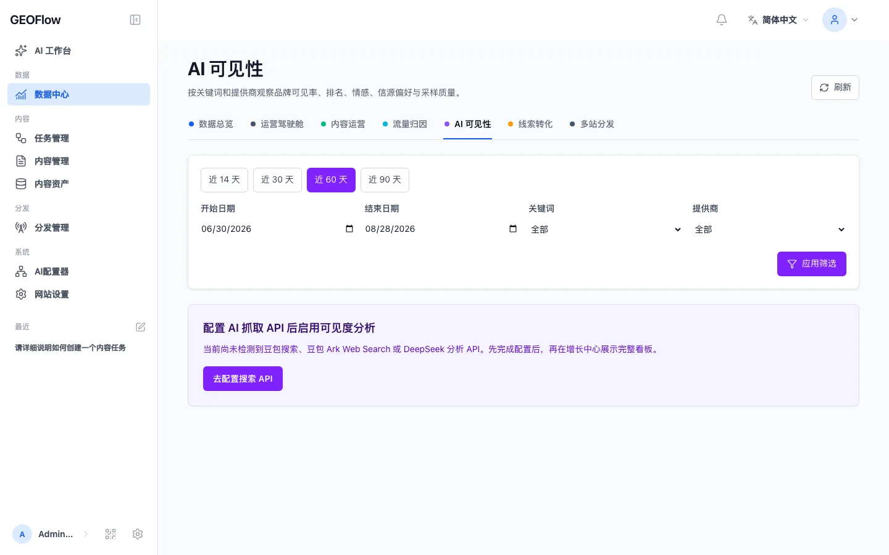

知识、标题、关键词、图片、作者、模型与提示词集中管理
GEOFlow
面向企业官网与多站点运营的 GEO 智能运营系统
可信知识AI 内容生产质量门禁多站点分发数据反馈
人民币 10 万元 · 终身商业授权部署
GEOFlow企业级 GEO 智能运营系统
2026.09产品演示
GEOFlow 把分散的 GEO 工作接成一条持续运营链
企业资料、生产规则、审核结论、发布结果与运营数据拥有同一套上下文
从内容工具组合，升级为可治理的运营底座
适合需要长期建设多渠道GEO运营、官网GEO内容、GEO子频道、行业信源站或多品牌站点的团队
任务生成、AI 质检、人工审核与发布状态完整衔接
内容、流量、分发、线索与 AI 可见性回到同一数据中心
核心资料、权限、审计、渠道配置与运营数据由企业掌控
GEOFlow运行原理
2026.09产品演示
五个环节把可信事实沉淀为可复用的答案资产
每一轮反馈都会回到知识、选题与渠道优先级，形成持续运营闭环
资料、网页、事实、规则、图片与品牌口径
模型、提示词、标题、知识与运行计划协同生成
风险扫描、AI 质检与人工审核决定发布状态
本站、托管站点、Agent、WordPress、API 与人工发布
访问、内容、分发、线索和生成式引擎观测回流
结果回流：问题 → 事实 → 内容 → 信源 → 答案 → 线索
GEOFlow知识能力
2026.09产品演示
知识先被原子化，内容才拥有稳定的事实边界
多来源资料经过解析、校验、修订与发布，形成可被任务稳定调用的企业知识

保留资料来源冲突与风险校验向量召回与稳定回退知识变化触发质量结果更新
GEOFlow内容能力
2026.09产品演示
内容生产由任务编排驱动，规模与规则可以同时控制
从候选标题、内容资产到文章编辑，每一次运行都保留配置快照、状态与结果



计划与循环任务多知识库组合智能模型容错作者、分类、图片与 SEO 协同队列异步执行
GEOFlowAI 质检能力
2026.09产品演示
AI 质检成为发布门禁，每次判断都有证据与状态
风险扫描、AI 质检与人工审核共同决定文章能否进入发布链路

文章分段
把长文拆成可定位、可回看的审核片段
证据构造
结合知识来源、数据、引文、广告规则与发布语境
结构化评审
指定模型返回分项问题、依据与修改建议
本地校验
本地评分器验证结果结构并形成门禁结论
审计与重检
正文或证据变化后旧结果过期，人工放行记录原因
GEOFlow分发能力
2026.09产品演示
一次审核完成后，内容可以进入官网、托管站点与外部渠道
自动分发与人工确认共享同一篇文章、同一组风险状态和同一条审计链



企业官网GEOFlow AgentWordPress REST通用 HTTP APIChrome 运营助手
GEOFlow数据能力
2026.09产品演示
一套数据看清 GEO 运营结果
从总览下钻内容、流量、分发、线索与 AI 可见性


结果回流，驱动下一轮运营补知识 · 选主题 · 调渠道
GEOFlow系统级亮点
2026.09产品演示
产品亮点集中在可运营、可审计与可扩展
GEOFlow 3.0 已覆盖团队日常使用、开发接入、安全治理与系统运维
统一侧栏、顶栏、表单、弹窗与移动端交互，支持响应式布局
后台可安装为独立窗口，适合跨语言团队开展日常运营
目录、任务、运行、素材与文章具备受控自动化入口
面向开发、运营、前台、渠道与旧版迁移提供统一能力说明
高风险操作分级控制，Token、出站请求、文件路径与日志均有边界
独立 Updater 负责环境验收、完整备份、应用更新与回滚
GEOFlow适用场景
2026.09产品演示
五类场景都围绕长期内容资产与持续运营展开
从单一官网到多品牌、多站点，系统能力可以随组织与渠道复杂度逐步展开
围绕产品、案例、FAQ、行业知识与品牌规则持续建设内容
通过子域名或独立目录建设资讯、知识或解决方案频道
围绕一个行业、主题或问题域维护可核验的长期内容资产
由品牌、增长与内容团队统一生产、审核、导出与人工发布
从一套后台管理多个站点、栏目、托管渠道与外部分发目标
GEOFlow商业授权方案
2026.09商务建议
10 万元获得 GEOFlow 终身商业授权部署
一次授权建立可长期使用、私有部署并持续扩展的企业 GEO 基础设施
COMMERCIAL LICENSE
10万元人民币
终身商业授权部署
适用于闭源修改、白标、OEM、专有产品集成等需要单独商业许可的使用方式
终身授权私有化部署商业使用
GEOFlow下一步
2026.09产品演示
把 GEO 从一次项目沉淀为
企业长期基础设施
明确使用组织、商业用途与合同签署主体
准备服务器、域名、数据库、Redis 与模型接口
选择知识、内容、渠道与数据的第一条闭环
进入部署实施GEOFlow · 10 万元终身商业授权